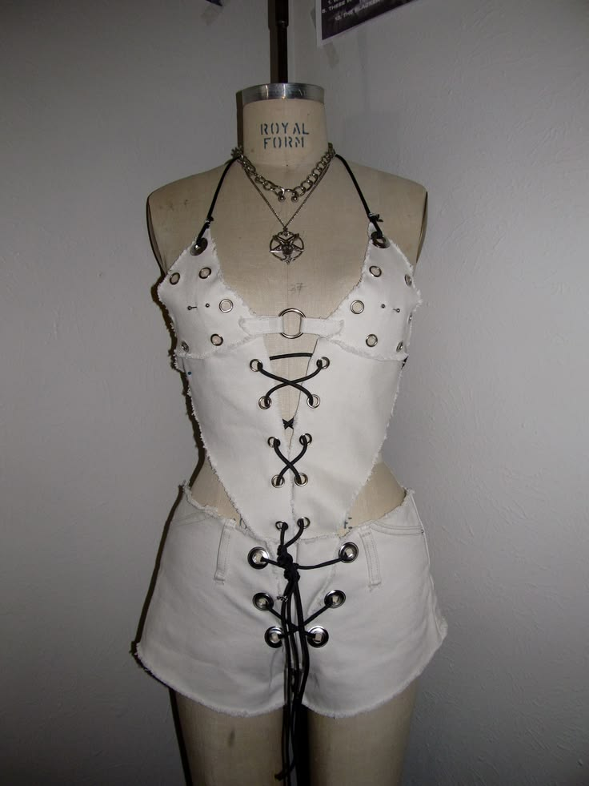

Consisting of a top and skirt. Fabric from my closet, made out of 1 pair of jeans.
I wanted an all white outfit to go to a music festival to then this idea struck. Similarly to my other bra tops, I wanted it to look edgy, therefore I added eyelets surrounding all over the edges of the top.
There are a couple thing I could have tweeked, one would be is that I could have aligned the shorts better, I was messily trying to finish this before the festival and cut it wrong. Another thing I could tweek is switching out the string for the eyelets to white to match the all white look.